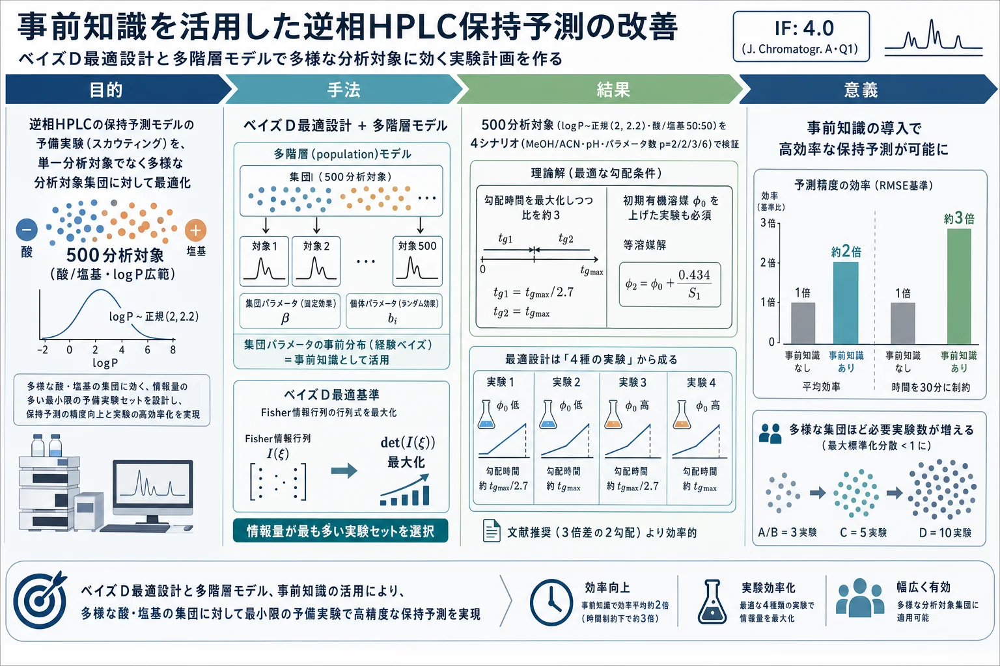

事前知識を活用した逆相HPLC保持予測の改善 — ベイズD最適設計と多階層モデルで多様な分析対象に効く実験計画を作る

<!-- 方針: 9ページのJ. Chromatogr. A 方法論論文(単著)の全訳密度版。原文構成(序論→理論→技術→結果と考察→結論)に忠実。数式(FIM式2・D最適式3・効率式4・等溶媒式7-9・勾配式10-11)と数値を保持。数式は元PDFのOCRが崩れていたため意味に基づき標準形で再掲。統計的にやや専門的なためlevel=researcher。「> 補足:」は訳者注。 -->
書誌情報
- 標題（原題）: Leveraging prior knowledge for improved retention prediction in reversed-phase HPLC
- 著者・所属: Paweł Wiczling（グダニスク医科大学 生物薬剤学・薬力学教室、ポーランド）
- 掲載誌・巻号・DOI: J. Chromatogr. A, 2025, 1746, 465787. https://doi.org/10.1016/j.chroma.2025.465787
- インパクトファクター: 4.0（Journal of Chromatography A, Q1・2024 JCR）
- 受理経過 / ライセンス: Received 2024-12-31 / Accepted 2025-02-15。Elsevier
- データ公開: R/Stan コードとデータは GitHub 公開（github.com/wiczling/optimal-design）
- 原本PDF: Driveへ自動アップロードできず、ユーザーに返却済み（
1s2.0S0021967325001359main.pdf）
補足（この論文の位置づけ）: 「保持予測モデルを当てはめるための予備実験（スカウティング実験）を、どう設計すれば最少の実験で最大の情報が得られるか」を、ベイズ実験計画（D最適設計）＋多階層モデルで論じた、やや理論寄りの単著論文。生薬に限らないが、本サイトの保持モデリング総説（retention-modeling-lc-review）・in silico HPLC（insilico-hplc-qspr-lser-lss-retention）・LC×LCベイズ最適化（lcxlc-bayesian-optimization-method-development）・黄連QbD設計空間（coptis-alkaloids-qbd-bayesian-design-space）と一続きで、「実験計画の“計画”自体をベイズで最適化する」最上流の話。単一の分析対象でなく、性質の異なる多数の分析対象（酸・塩基、親水〜親油）に一括で効く固定設計を作る点が新しい。
要旨（Abstract）
分析対象の保持に関する事前情報は、しばしば暗黙のうちに法開発ワークフローに取り込まれている。この事前知識は、分析対象の構造・性質・既存文献・分析者の経験など様々な源に由来する。あるいは、事前情報をベイズ推論で法開発に形式的に統合することもできる。その場合、事前情報はモデル構造・共変量関係（例: 定量的構造-保持相関 QSRR）・多階層モデル等に由来する集団レベル（population-level）パラメータとして表現できる。集団レベルパラメータは、ある分析対象集団に属する各分析対象で共通であり、どんな予備データからでも個別（分析対象固有）パラメータの予測を助ける。事前情報と多階層モデリングの枠組みを使うことで、広範な条件・多様な分析対象集団にわたって望ましい予測精度に至る実験計画を作れる。これは単一または典型的な分析対象向けに条件を最適化するより高い正確性をもたらす。本研究では、ベイズ D最適性基準の最大化により、多様な分析対象集団（親油性の幅広い酸・塩基）に対する最適な実験セットを同定した。事前情報を取り込む利点を強調し、最近開発された機構モデルに基づくシミュレーションで、最適設計理論・多階層モデル・事前情報を組み合わせて逆相HPLCのより効率的な実験計画を得られることを検証した。
キーワード: 多階層モデル；事前情報；D最適設計；実験計画
1. 序論（Introduction）
クロマトの法開発は、最適条件を選ぶ前に分析対象の保持を十分理解しようとする探索型アプローチをとることが多く、これは QbD 原則に沿った理論的/統計的モデルに基づく。予備（スカウティング）実験でデータを集め、適切なモデルで記述し、その予測で最適分離を同定する。理論モデルや最適化ソフトの進歩がこれを助けたが、ベイズ多階層モデルと事前情報の導入でさらに改善できる。事前情報はモデル構造・共変量関係（QSRR）・多階層モデル由来の集団パラメータで表せる。集団パラメータは同一集団の各分析対象で共通で、個別パラメータの有用な事前情報となる。多階層モデルの予測は多様な分析対象に一般化でき、広範な条件・分析対象集団で望ましい予測精度を達成する実験計画の同定を可能にし、法開発の効率を高める。
最適設計は D最適性基準で導ける。これは最小の実験労力で最大のモデルパラメータ情報を引き出すことを目指し、Fisher情報行列の行列式を最大化（＝パラメータ推定の分散共分散行列の行列式を最小化）することで達成される。結果としてパラメータ推定は可能な限り精密（不確実性最小）になる。D最適設計は通常、事前定義モデル・設計水準の範囲・独立誤差の仮定に基づく。1次・2次応答曲面モデルで保持を記述する広範な研究があり、抽出最適化・分離度向上といった実務問題への D最適設計の適用も詳細にレビューされている。臨床試験の最適サンプリング計画（最適なクロマト条件探索と類似）にも使われてきた。より広くは、D最適設計は効用に基づくベイズ実験計画の一手法である。
最適設計理論は通常、RP-HPLCモデルとパラメータの推測値が既知の特定の分析対象に適用される。近年開発されたベイズ多階層モデルは、事前分布にわたる予測保持時間の漸近分散の平均を最小化することで、分析対象の範囲にわたるベイズD最適設計を可能にする（漸近性は、事後分布を正規近似しその分散をFisher情報行列の逆行列とするD最適設計の仮定に由来）。これにより、研究した分析対象と類似の性質を持つ、多様な分析対象に適用できる実験計画を作れる。
本研究では、文献で現在推奨される設計（有機溶媒について、勾配時間が主に約3倍異なる2つの広い勾配）より優れた設計が存在しうると仮説を立て、事前知識と予備実験数の導入による効率向上を評価し、得た最適設計の勾配予測分散を図示する。
2. 理論（Theoretical）
観測保持時間の統計モデルは t_{R,obs,ij} = f(D_j, R_i) + ε_{ij}。ここで R_i は分析対象 i の個別パラメータのpベクトル（Neueモデルの logkw, S1, S2 を含む）、D_j は保持に影響する調整可能な全システムパラメータ（有機溶媒の種類・含量、勾配時間、pH 等）のnベクトル、ε_{ij} は残差誤差（等分散・平均0・分散σ²）。個別パラメータ R_i は分析対象の logP・有機溶媒種・分析対象の形態（中性/イオン）に依存し多変量正規分布に従う（XBridge Shield RP18 で推定した値に基づく）。温度効果は考慮せず、pKa は既知と仮定。
分析対象 i のパラメータの事後分布は 式(1) p(R_i | t_{R,i}, D) ∝ p(t_{R,i} | R_i, D)·p(R_i)（p(t_{R,i}|R_i,D)＝尤度、p(R_i)＝事前分布）。本研究の p(R_i) は以前に多階層モデルで推定した集団パラメータであり、この方法は経験ベイズ（Empirical Bayes）推定に相当する。
最適設計には Fisher情報行列を用いる:
式(2) FIM(R, D) = JᵀV⁻¹J + Ω⁻¹。J はヤコビアン（J = ∂t_r/∂R）、Ω⁻¹ は R_i の事前情報の分散共分散行列の逆（＝分析対象間ばらつきの精度行列）、V は残差誤差分散の対角行列（V = σ²I_N）。
対数尤度が良好なら FIM は MLE/MAP でのヘッセ行列としても計算できる。Cramér–Rao 不等式により期待分散共分散行列は漸近下限を持つ。D最適設計では |FIM| を最大化（＝パラメータの同時漸近信頼領域の体積＝一般化分散を最小化）:
式(3) D\* = argmax_D |FIM(R, D)|
設計の比較には相対効率 式(4) E = (|FIM(R, D1)| / |FIM(R, D2)|)^{1/p}（p=推定パラメータ数）。実務的指標で、D1 の相対効率が50%なら、D2 の精度を得るのに2倍の実験が要る、という意味。
3. 技術（Technical）
計算は Stan/cmdstanr（RStudio 統合）。ヘッセ行列は MAP 推定点で Stan 関数により計算。推論には Laplace 法（MCMC の厳密ベイズより軽量。事後モード＝MAP を中心とする正規近似からサンプル）。局所D最適設計は修正 Fedorov 交換アルゴリズムで探索。設計領域は、勾配時間グリッド 10, 20, …, maxtg=270 min、初期有機溶媒含量グリッド 0.05/0.10/0.15/0.20（MeOH・ACN）、移動相 pH 1〜2値の全線形勾配の組合せ。最終有機溶媒含量は 0.8（全分析対象を溶出させつつ広い条件範囲を探索）。
Fedorov 交換は、各反復で平均 log|FIM| を増やすように設計点を1つずつより最適な点に置換し、比がゼロ（許容誤差）に近づいたら最適解とする。シミュレーションは n=500 分析対象（logP は 0.5〜7 に制約、種別=酸/塩基）を次から無作為抽出: 式(5) logP_i ~ 正規(2, 2.2)、式(6) Analyte_i ~ カテゴリカル(酸=0.5, 塩基=0.5)。
4シナリオ:
- A・B（p=2）: MeOH（A）または ACN（B）、単一 pH で 2パラメータ（logkw, S1）を推定。
- C（p=3）: MeOH と ACN、単一 pH で 3パラメータ（logkw, S1, dS1＝MeOH中のS1へのACNの効果）。
- D（p=6）: MeOH と ACN、2つの pH（各分析対象が中性またはイオン形）で 6パラメータ（logkw, S1, dS1, dlogkw, dS1, ddS1＝解離の効果）。
- A–C の形態分布は中性40%・酸30%・塩基30%。
分析対象固有パラメータは事前分布 R_i = MNV(θ̂ + β·(logP_i − 2.2), Ω) から抽出して「真値」とする。事前情報を使わないシナリオでは Ω⁻¹ を100倍にスケールして実質無情報事前とした。比較用の「典型設計」は 90分・270分の2勾配（有機溶媒 0.05→0.8）で、シナリオC では MeOH と ACN 両方（n=4実験）、シナリオD では両溶媒×2 pH（n=8実験）。
4. 結果と考察（Results and discussion）
等溶媒（isocratic）の明示解: 有機溶媒含量が唯一の設計変数のとき、保持時間は Snyder–Soczewinski モデル 式(7) t_{R,j} = t₀·(1 + 10^{logkw − S1·φ_j})。この場合 |FIM| は明示形 式(8) |FIM| = 10^{−2S1(φ1+φ2)}·(φ1 − φ2)²·定数 を持ち、制約 φ0 ≤ φj ≤ 1 の下で最大は 式(9) φ1 = φ0, φ2 = φ0 + 0.434/S1。最も情報量の多い実験は低有機溶媒域にあり、MeOH（S1=5〜4）では約9〜10%の含量差の2実験が最適。
勾配（gradient）: ドウェル時間ゼロと仮定すると保持時間は 式(10)（Δφ=φf−φ0、tg=勾配時間）。強保持分析対象（φ0=0近似、対数内の+1を無視）では 式(11) |FIM| = tg,1²·tg,2²·(ln(tg,1/tg,2))²·定数。これより 勾配時間は最大化しつつ比を約3（tg,2=tg,max、tg,1=tg,max/2.7）が最適で、文献推奨と一致。低保持・長勾配では勾配式が等溶媒式に簡略化され |FIM| が tg に依存しなくなるため、φ0 を変えるのが有利。性質の異なる分析対象の混合では、勾配時間 tg と初期含量 φ0 の両方を変える実験が必要。
500分析対象の最適設計（Table 1）: シナリオ間でほぼ一貫し、事前情報の有無にほぼ依存しない。シナリオC・Dの各形態での最適設計は次の4ステップ:
- 最大勾配時間（maxtg 例270分）・初期 φ0=0.05 の勾配を MeOH と ACN の両方で。
- MeOH で maxtg の約1/3（例100分）・φ0≈0.2 の勾配。
- MeOH で maxtg（例270分）・φ0≈0.2 の勾配。
- ACN で maxtg（例270分）・φ0≈0.1 の勾配。
（A・B では全ステップで MeOH か ACN のいずれか一方）。理論計算と整合し、初期有機溶媒含量を上げた実験の必要性を裏づける。多くの実験で最長勾配（270分）が最高精度。
設計効率（Fig. 1）: 実験を増やすほど効率が上がり、同じ実験数でも最適化設計は参照設計より高効率——文献推奨よりも効率的な設計が提案可能と確認。
事前情報の効果（Fig. 2）: 事前情報を取り込むと効率が上がる。非常に長い実験時間を許すと効率の中央値増加は小さいが、平均増加は約2倍（事前情報で推定が大きく変わる分析対象が相当割合あるため）。実験時間が制約されるほど事前情報が決定的——最大勾配時間を30分に制約すると事前情報で平均約3倍効率的（Fig. 1S）。なお事前情報なしの結果でも保持時間モデルとS2既知を仮定しており「楽観的」で、実際にはS2やモデル自体の追加推定が要る。
大域最適性（予測保持時間の標準化分散 <1）（Fig. 3）: シナリオA・Bで3実験、Cで5実験、Dで10実験で達成。多様な分析対象集団では単一分析対象より多くの実験が必要（ベイズ設計は事前分布が広いほど選ぶ実験数が増え、しばしば推定パラメータ数を上回る）。ただし近似予測でよければ少数（シナリオCで2実験）で足りる。全分析対象に規定精度を保証するにはさらに実験が要る。
時間制約とスケーリングのトレードオフ（Fig. 4）: 270分実験は時間がかかるため、実験数を減らす／勾配時間を定数倍にスケールする実務的調整があるが、予測分散増・効率低下を伴う。式(11) より効率は勾配時間のスケール係数に比例して低下。maxtg=270分 vs 30分（実験時間で補正すると約9倍差）を比べると、270分は事前情報ありで2倍・なしで約4倍高効率——最長の実現可能な勾配時間と事前情報の使用が最精密な推定に重要。時間制約別の推奨: <10時間なら3実験、10〜15時間なら4実験、それ以上なら5実験が最大標準化分散を最小化。全条件での平均標準化分散はずっと低く、多くの勾配条件で低不確実性が期待できる。
固定設計 vs 逐次設計: 本手法は多様な分析対象群の一般化分散を最小化する固定設計を与える。固定設計が必要なときは適切だが、逐次的に設計を更新するモデルベース法開発（各新データでパラメータを更新し次の最も情報的な実験を同定）の方が効率的。ただし逐次法は計算負荷が大きく常には現実的でない。本設計は法開発の良い出発点となり、新データ収集時に修正できる柔軟性を持つ。
5. 結論（Conclusions）
逆相HPLCで、広範な分析対象のパラメータ推定の平均一般化分散を最小化する最適実験計画を決める方法論を示した。近年の多階層モデルに基づき、酸・塩基が中性・イオン両形態をとる一般的な分析問題を扱う。推奨最適設計は: 可能な限り長い勾配時間（maxtg）・φ0=0.05 の勾配を MeOH と ACN 両方で；MeOH で maxtg/3・φ0≈0.2；MeOH で maxtg・φ0≈0.2；ACN で maxtg・φ0≈0.1（異なる pH を考える場合は各形態で）。実験数や勾配時間スケールは制約に応じて変更できる。事前情報は大半の分析対象でパラメータ推定の正確性を大きく高める。本手法は汎用性が高く他のクロマト法・技術にも容易に適用でき、複雑なクロマトデータを要約しシミュレーションで最適設計を導く多階層モデル開発の重要性を示す。
訳者補足（実務者向けの読みどころ）
以下は原文に無い、実務観点の補足である（本文の訳と混ぜない）。
- 「実験計画の計画」を最適化する話: 通常のQbD/DoEは「分析条件を最適化する」が、本論文は一段上流で「保持モデルを当てるための予備実験セット自体を最適化する」。Fisher情報行列の行列式を最大化＝「同じ実験本数で最も精密にモデルパラメータが決まる実験の組」を選ぶ、という発想。
- 実務的な持ち帰り（数式を使わなくても効く指針）:
- 勾配スキャンは「勾配時間の異なる2本（比は約3、例 90分と270分）」が定石だが、本論文は 初期有機溶媒 φ0 を上げた実験も混ぜることで効率が上がると示す。
- できるだけ長い勾配時間を使うほど精密（時間が許せば）。
- 似た化合物の過去データ（事前情報）を使うと、必要実験数を減らせる（時間が厳しいほど効果大＝最大3倍）。
- 多様な化合物群を一度に扱うほど、必要実験数は増える（単一化合物なら少なくて済む）。
- 生薬QCへの含意: 生薬は多成分＝性質の異なる化合物の集団。本論文の「集団（population）に一括で効く固定設計」は、多成分HPLC法のスカウティング設計にそのまま当てはまる。似た生薬の過去の保持データを事前分布として使えば、新規生薬の法開発を高速化できる。
- 用語: D最適設計＝Fisher情報行列の行列式(det)を最大化する実験計画（パラメータ推定を最も精密にする）、Fisher情報行列(FIM)＝データがパラメータについて持つ情報量の行列、多階層(multilevel/population)モデル＝集団共通のパラメータと個体固有パラメータを階層的に扱うモデル、経験ベイズ＝事前分布をデータから推定して使うベイズ、Neueモデル＝logk と有機溶媒比φの関係を表す保持モデル(logkw, S1, S2)、φ0＝初期有機溶媒含量、tg＝勾配時間、相対効率E＝2設計の情報量比のp乗根。